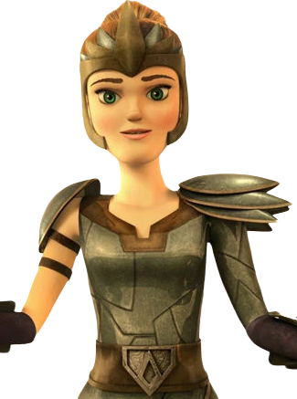

Dresseuse du Razolame des Dames Ailées
| Rôle | Dame Ailée, Dresseuse |
| Affiliation | Dames Ailées |
| Dragon | Razolame |
| Particularité | Membre des Dames Ailées - groupe exclusivement féminin |
Nathalie est l'une des Dames Ailées, une organisation de dresseuses de dragons. Son Razolame est un fidèle compagnon de combat. Déterminée et courageuse, elle représente la montée en puissance des dresseuses dans l'univers HTTYD. Son lien avec son dragon est aussi fort que celui des meilleurs dragonniers de Beurk.